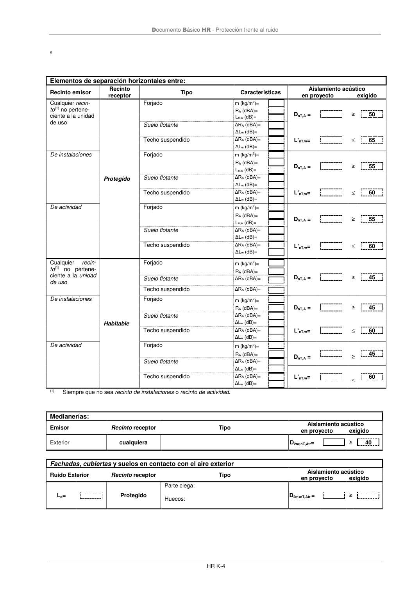
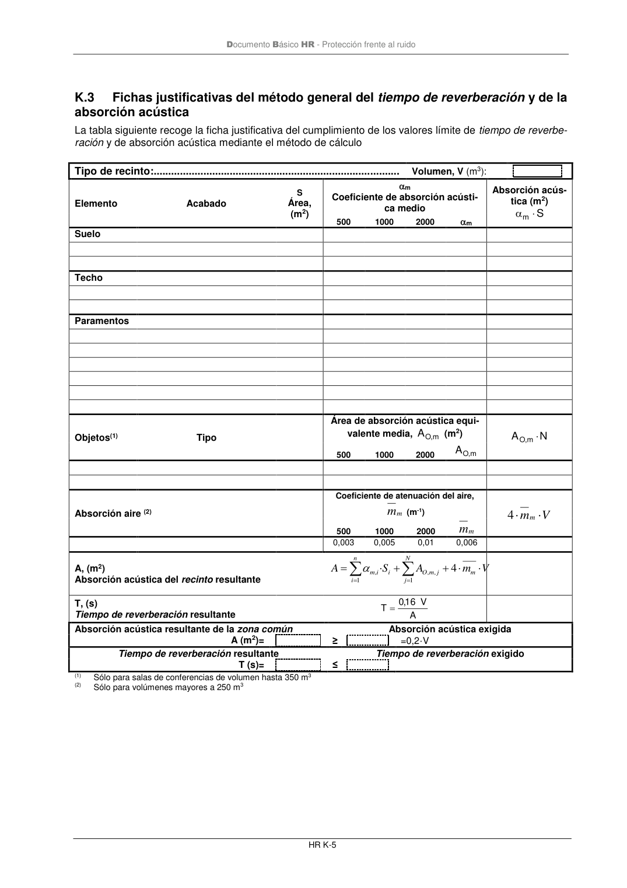

DB-HR · K.2 Fichas justificativas de la opción general de aislamiento acústico · versión 2019-12-20 · capa oficial
Formatos: JSON compacto · Markdown · PDF fuente
Ámbito del documento · texto del ámbito · documento y tablas
ID técnico a0127 · PDF pág. 77-79 · jerarquía no validada por persona · contrastado con el literal de la página 77 (candidato tipográfico); no validado por persona · padre: raíz
K.2 Fichas justificativas de la opción general de aislamiento acústico Fichas justificativas de la opción general de aislamiento acústico Las tablas siguientes recogen las fichas justificativas del cumplimiento de los valores límite de aislamien- to acústico mediante el método de cálculo. Tabiquería. (apartado 3.1.2.3.3) Tipo Características de proyecto exigidas m (kg/m2)= ≥ - RA (dBA)= ≥ 33 Elementos de separación verticales entre: Recinto emisor Recinto receptor Tipo Características Aislamiento acústico en proyecto exigido Cualquier recin- to(1) no pertene- ciente a la unidad de uso (si los recintos no comparten puer- tas o ventanas) Protegido Elemento base m (kg/m2)= DnT,A = ≥ 50 RA (dBA)= Trasdosado ΔRA (dBA)= Cualquier recin- to(1) no pertene- ciente a la unidad de uso (si los recintos comparten puer- tas o ventanas) Puerta o ventana RA= ≥ 30 Cerramiento RA= ≥ 50 De instalaciones Elemento base m (kg/m2)= DnT,A = ≥ 55 RA (dBA)= Trasdosado ΔRA (dBA)= De actividad Elemento base m (kg/m2)= DnT,A = ≥ 55 RA (dBA)= Trasdosado ΔRA (dBA)= Cualquier recin- to(1) no pertene- ciente a la unidad de uso (si los recintos no comparten puer- tas o ventanas) Habitable Elemento base m (kg/m2)= DnT,A = ≥ 45 RA (dBA)= Trasdosado ΔRA (dBA)= Cualquier recin- to(1)(2) no pertene- ciente a la unidad de uso (si los recintos comparten puer- tas o ventanas) Puerta o ventana RA= ≥ 20 Cerramiento RA= ≥ 50 De instalaciones (si los recintos no comparten puer- tas o ventanas) Elemento base m (kg/m2)= DnT,A = ≥ 45 RA (dBA)= Trasdosado ΔRA (dBA)= De instalaciones (si los recintos comparten puer- tas o ventanas) Puerta o ventana RA= ≥ 30 Cerramiento RA= ≥ 50 De actividad (si los recintos no comparten puer- tas o ventanas) Elemento base m (kg/m2)= DnT,A = ≥ 45 RA (dBA)= Trasdosado ΔRA (dBA)= De actividad (si los recintos comparten puer- tas o ventanas) Puerta o ventana RA= ≥ 30 Cerramiento RA= ≥ 50 (1) Siempre que no sea recinto de instalaciones o recinto de actividad. (2) Sólo en edificios de uso residencial o hospitalario; Documento Básico HR - Protección frente al ruido HR K-4 º Elementos de separación horizontales entre: Recinto emisor Recinto receptor Tipo Características Aislamiento acústico en proyecto exigido Cualquier recin- to(1) no pertene- ciente a la unidad de uso Protegido Forjado m (kg/m2)= DnT,A = ≥ 50 RA (dBA)= Ln,w (dB)= Suelo flotante ΔRA (dBA)= ΔLw (dB)= L’nT,w= 65 Techo suspendido ΔRA (dBA)= ΔLw (dB)= De instalaciones Forjado m (kg/m2)= DnT,A = ≥ 55 RA (dBA)= Ln,w (dB)= Suelo flotante ΔRA (dBA)= ΔLw (dB)= L’nT,w= 60 Techo suspendido ΔRA (dBA)= ΔLw (dB)= De actividad Forjado m (kg/m2)= DnT,A = ≥ 55 RA (dBA)= Ln,w (dB)= Suelo flotante ΔRA (dBA)= ΔLw (dB)= L’nT,w= 60 Techo suspendido ΔRA (dBA)= ΔLw (dB)= Cualquier recin- to(1) no pertene- ciente a la unidad de uso Habitable Forjado m (kg/m2)= DnT,A = ≥ 45 RA (dBA)= Suelo flotante ΔRA (dBA)= Techo suspendido ΔRA (dBA)= De instalaciones Forjado m (kg/m2)= DnT,A = ≥ 45 RA (dBA)= Suelo flotante ΔRA (dBA)= ΔLw (dB)= L’nT,w= 60 Techo suspendido ΔRA (dBA)= ΔLw (dB)= De actividad Forjado m (kg/m2)= DnT,A = ≥ 45 RA (dBA)= Suelo flotante ΔRA (dBA)= ΔLw (dB)= L’nT,w= 60 Techo suspendido ΔRA (dBA)= ΔLw (dB)= (1) Siempre que no sea recinto de instalaciones o recinto de actividad. Medianerías: Emisor Recinto receptor Tipo Aislamiento acústico en proyecto exigido Exterior cualquiera D2m,nT,Atr= ≥ 40 Fachadas, cubiertas y suelos en contacto con el aire exterior Ruido Exterior Recinto receptor Tipo Aislamiento acústico en proyecto exigido Ld= Protegido Parte ciega: D2m,nT,Atr = ≥ Huecos: Documento Básico HR - Protección frente al ruido HR K-5


PDF fuente redistribuible: copia fiel enlazada en esta página (SHA256 verificado).